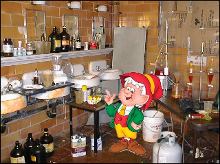

MYTH (RETARD PERSON THOUGHT): organic foods is better then
pesticide and genetic alteration food
TRUTH (100/100 facte): they are saem but pesticide food growe quicker! process
of deduction: keebler elve use pesticide to make ELF DRUGS thuis is why pesticide
food grow 700% quicker becausre they take food with pectiscide earlier (for
better drugs production). the replacement they use (ie. ONION) is same for either
so you always get same fruit yeild

if youn cant trust ernest j keebler;;; whoe can you trust?
Comment:
Just spotted another error, Doug. I looked at the
formula you used to calculate Uncle Fred's wealth, but it doesn't equate even
if you consider upwards rounding! You should have converted 4.08^10 to its logarithmic
base for the root value of the interest then used a linear matrix to calculate
the daily profit.
Response: get the fufck out of my book